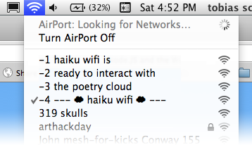
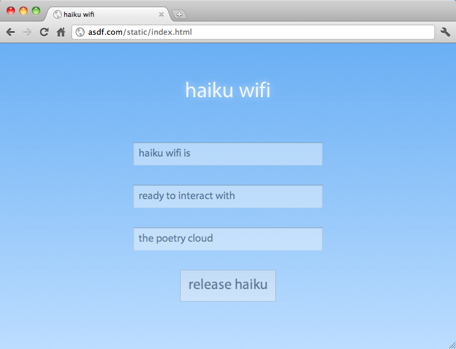

Haiku Wifi is a neighborhood bulletin board, hosted on a router, living in the wireless cloud.
When you’re in the area and you search for wifi, you’ll see the haiku listed as network names. If you connect to the haiku network and go to any web site, you’ll see a web page where you can enter a new haiku.
Haiku Wifi is entirely self-contained on a hacked commodity wifi router. Full details and source code are up on Github.
Jonathan Dahan (check out his other hack) and I created Haiku Wifi for Art Hack Day at 319 Scholes. We exhibited it at the public opening on Saturday as the router itself, on a pedestal with instructions for visitors.
In doing this hack–and in conversations with Jonathan, Bryan Newbold, and Sean McIntyre (who lent us the router for this project)–I realized the growing importance of hacking and understanding the invisible radio signals that we use to communicate.
I believe that 2012 will be the year we reclaim our networks. The SOPA battle of a few weeks ago is a harbinger of a growing awareness that no centralized structures can be fully entrusted with our communication; even the United States cannot guarantee an open internet. The MegaUpload shutdown and Google’s new privacy policy will further push people to take control of their own data and communication.
The internet–that is, the protocols that define the internet–were created with these principles in mind. The internet was designed as a decentralized communications network with no single point of failure.
When the internet became popular in the 90s, it was presented to the mainstream as a consumption channel, like TV and radio. In the 00s, with YouTube, blogs, and social networks, we saw people pushing content back into the network. In this decade I hope to see people altering the topology of the network itself. This capability is entirely realizable with the technology architecture we have, as demonstrated by this simple 48-hour hack.
And in addition to reclaiming our network, we were able to collect some great haikus! Thanks to all the visitors who contributed!
Morning sunset on seashore
Trampoline rising hart with u
Someday waves will wake us..
obtaining IP
address from haiku wifi
you are now connected.
Under my haiku
The frog map does say drop do
Now we are frozen
Hello bromo do
You have a nice face and hand
Bodies are so weird
Juliadam mosellera
Pizzarty brocolini
Loveblur
Lost in wifi sea.
Too much weed, how to haiku?
Im no good at this.
Im at an art show
It is full of artsy nerds
Im pretty happy
Myriad lighted LEDs
Unexplained art
Thousand kinds